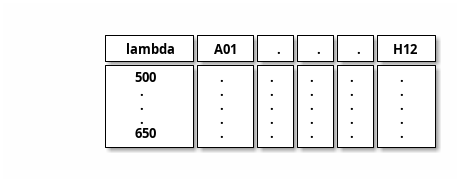
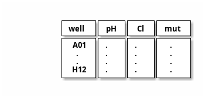
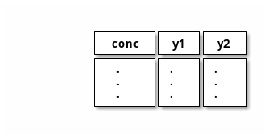

- Author:
Daniele Arosio
4. Old scripts#
4.1. fit_titration.py#
input ← csvtable and note _file
csvtable

note _file

output → pK spK and pdf of analysis
It is a unique script for pK and Cl and various methods:
svd
bands
single lambda
and bootstrapping
I do not know how to unittest TODO
average spectra
join spectra [‘B’, ‘E’, ‘F’]
compute band integral (or sums)
4.2. fit_titration_global.py#
A script for fitting tuples (y1, y2) of values for each concentration (x). It uses lmfit confint and bootstrap.
input ← x y1 y2 (file)
file

output →
params: K SA1 SB1 SA2 SB2
fit.png
correl.png
It uses lmfit confint and bootstrap. In global fit the best approach was using lmfit without bootstrap.
for i in *.dat; do gfit $i png2 --boot 99 > png2/$i.txt; done
4.3. IBF database uses#
Bash scripts (probably moved into prtecan) for:
fit_titration_global.pyfit_titration.pycd 2014-xx-xx (prparser) pr.enspire *.csv fit_titration.py meas/Copy_daniele00_893_A.csv A02_37_note.csv -d fit/37C | tee fit/svd_Copy_daniele00_893_A_A02_37_note.txt w_ave.sh > pKa.txt head pKa??/pKa.txt >> Readme.txt # fluorimeter data ls > list merge.py list fit_titration *.csv fluo_note
5. new#
Tit works for a plate organized with a pH-value for each row and a Cl conc value for each column.
Old fit works with a list of well and corresponding cl conc orpH value; the kind [“pH”, “Cl”] decides
Some measurements e.g. “A”, “C” and “D” are at T = 20 others (“B”, “E” and “F”) are taken at T = 37. This temp is present in each metadata. (e.g. measurements[“A”][“metadata”][“Temp”]).
A future note file format:
well, pH, Cl, T, mut, meas labels
echo "Well,pH,Cl,Name,Temp,Labels" > v224H_note.csv awk -F '\t' 'NR>1 {print $1 "," $2 "," $3 ",V224H,37.0,A B"}' v224H_note >> v224H_note.csv